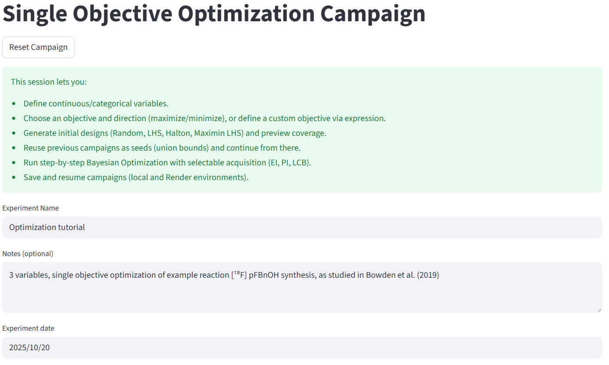
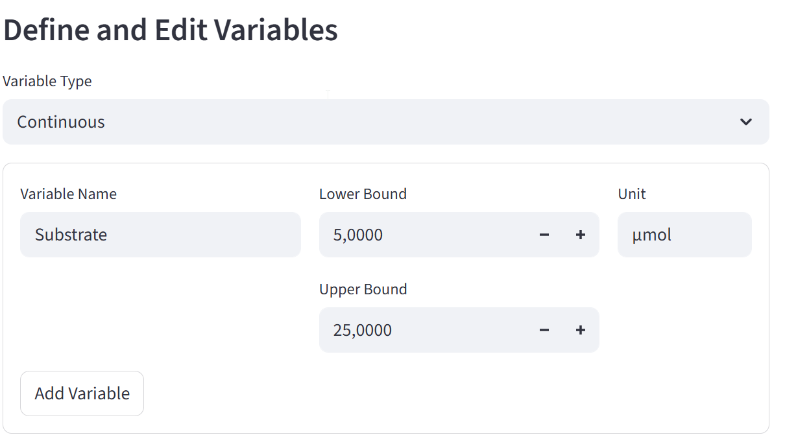
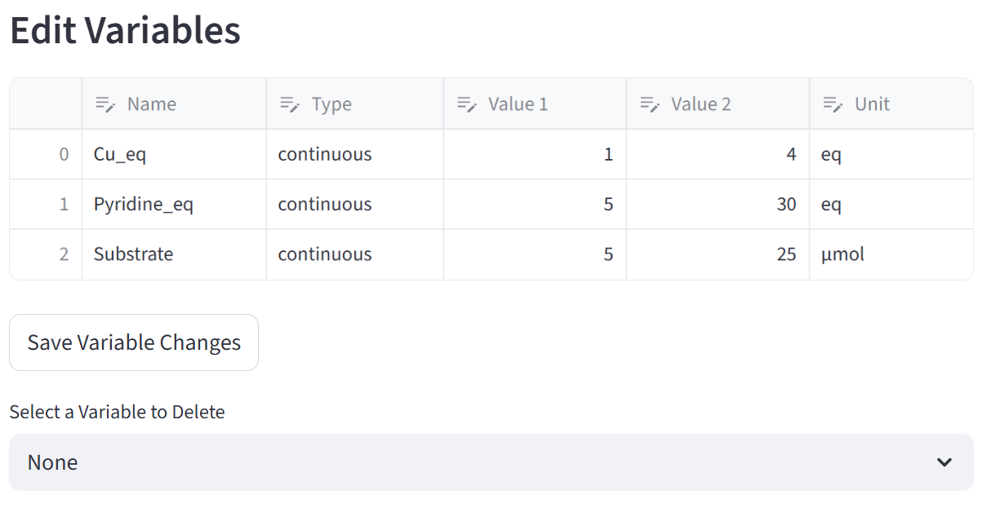
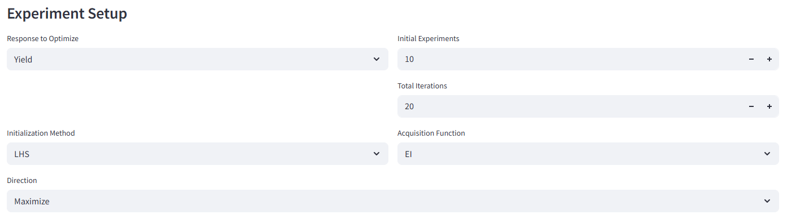
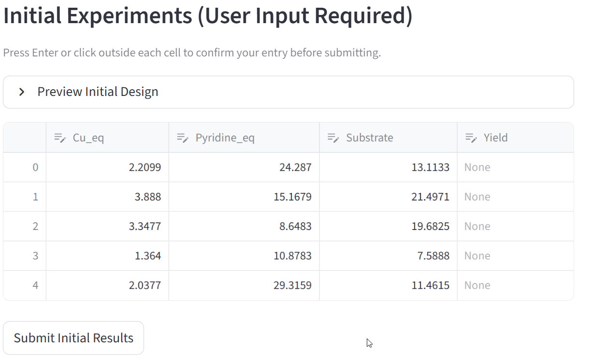
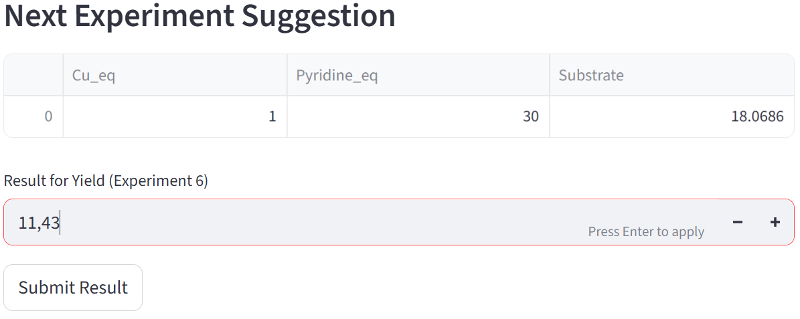
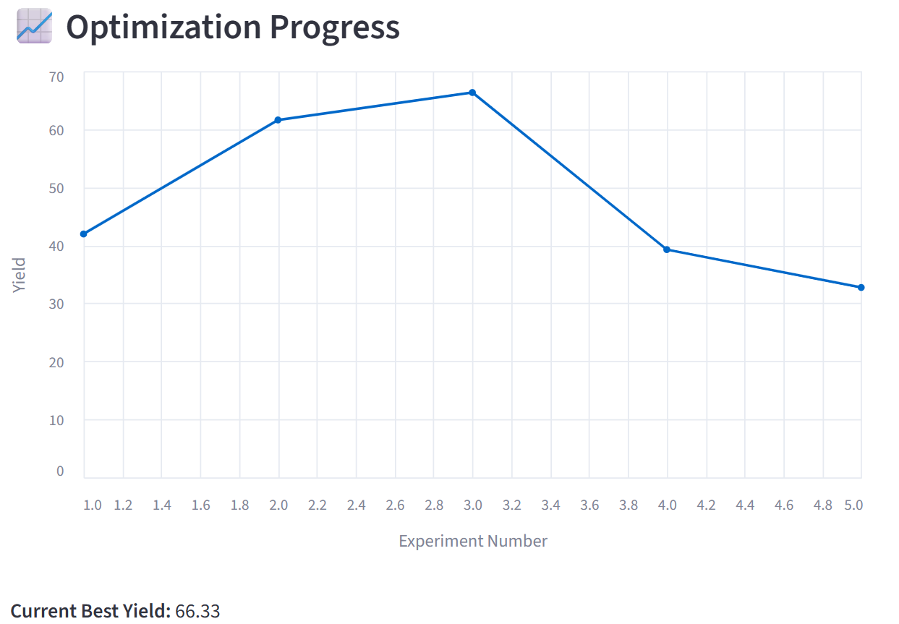
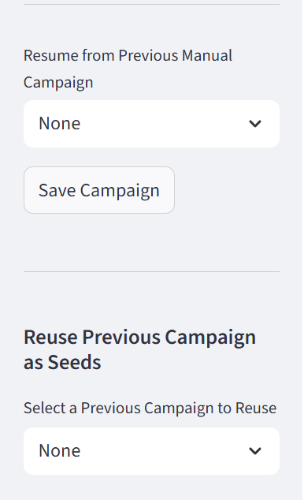
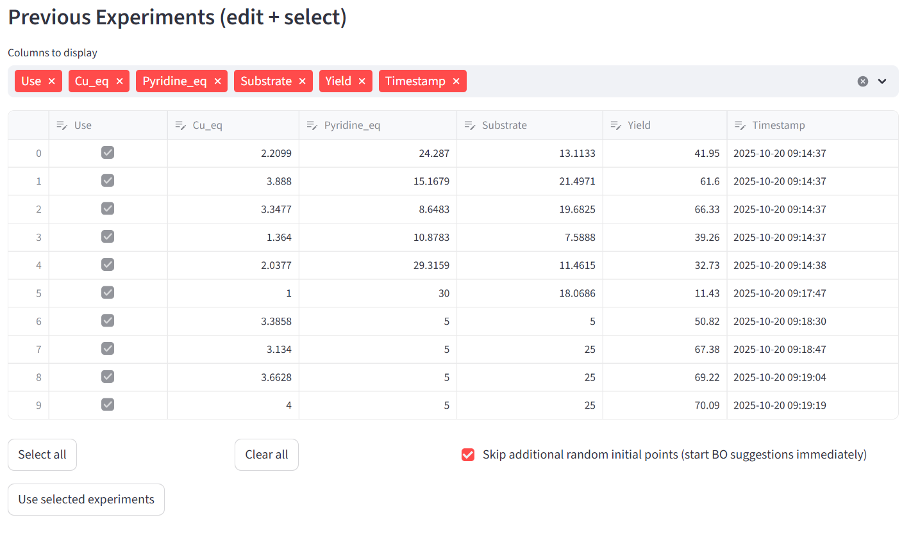

Single Objective Optimization Campaign — Case Study Tutorial
This page allows you to define and run a Single Objective Optimization (SOO) experiment.
A single objective optimization problem focuses on finding the best possible value (minimum or maximum) of one target function by adjusting one or more input variables within defined limits.
When you want to optimaze multiobjective problem see the page Multi Objective Optimization.
This tutorial walks you through a complete single objective optimization campaign step by step.
You will learn how to define variables, set up the optimization, enter experimental results, and interpret the outcome.
What Is a Single Objective Optimization?
In a Single Objective Optimization, you are trying to optimize one measurable outcome (the “objective”) by changing the values of one or more variables.
Mathematically:
Find x ∈ X such that
f(x) is minimized (or maximized)
where:
x – vector of input variables
X – allowed range for each variable
f(x) – objective function (what you want to optimize)
Goal of the Case Study
We will perform a reaction yield optimization — our goal is to maximize the reaction yield (%). For this case study example reaction of TO DO is used.
1. Define the Campaign

Enter a descriptive Experiment Name — e.g.
Optimization tutorial.Optionally, add Notes.
The Experiment Date field fills automatically — you can edit it if needed.
Press Save Campaign to store the configuration.
2. Define and Edit Variables
Next, define the experimental variables that the optimizer can change.

For each variable:
Variable Type: Choose
Continuous(numeric range) orCategorical(discrete options).Continuous: The variable can take any numerical value within a range (e.g., temperature = 20–100 °C).
Categorical: The variable can take only specific, named options (e.g., material type = {Aluminum, Steel, Copper}, solvents = {MeOH, THF, DMSO}).
Variable Name: For example,
Temperature.Lower/Upper Bound: Define the allowed range (e.g., 30–120 °C).
Unit (optional): Add units like
°C,bar, ormin.
Click Add Variable to include it in your setup.
Edit Variables
If you make changes later, update them directly in the table and click Save Variable Changes.

Delete Variables
Select a desired variable to be deleted from the dropdown menu, click Delete Variable, and then confirm with Save Variable Changes.

3. Experiment Setup

Field: Response to Optimize
Choose the objective function — the quantity you want to minimize or maximize.
This is typically a measured or calculated field (e.g., “Yield”, “Error”, “Efficiency”, “Voltage Drop”).
Example: If your goal is to maximize yield, select
Yieldas the response.
Field: Initial Experiments
Number of experiments to generate before optimization starts.
These experiments give the optimizer initial data to learn from.
Typical range:
3–10
Field: Total Iterations
Total number of optimization cycles to perform.
Each iteration tests a new set of variable values based on previous results.
Example: If Total Iterations = 20, the optimizer will run 20 rounds of testing to find the best solution.
Field: Initialization Method
Defines how the initial experimental points are chosen before optimization begins.
Options:
Random: Initial points are generated randomly within variable ranges.
LHS:
Halton:
Maximin LHS:
Field: Acquisition Function
Controls how new experimental points are chosen during optimization.
Common methods:
EI (Expected Improvement): Chooses points that are most likely to improve the best result so far.
PI (Probability of Improvement): Focuses on points that have a high chance of being better than the current best.
LCB (Lower Confidence Bound): Balances exploration (trying new areas) and exploitation (improving known good areas).
Choose EI if you’re unsure — it’s the most commonly used and balances exploration and exploitation.
4. Generate Initial Experiments
Click Suggest Initial Experiments.
The system generates a design table based on your variable ranges and initialization method.

Fill in your measured results (e.g., Yield) for each row.
Press Submit Initial Results when done.
5. Run the Optimization Loop
Once initial data is submitted, the optimizer proposes the Next Experiment Suggestion — the next best parameter combination to test.

Perform the experiment with the suggested parameters.
Enter the measured value (e.g.,
Yield = 41.08) in the Result for Yield field.Press Submit Result.
The system automatically updates the model and suggests the next point.
Repeat until all iterations are completed.
6. Monitor Optimization Progress
During or after the optimization, you can visualize how the process evolves.
Parallel Coordinates Plot
Shows all tested experiments and how each variable affects the yield.

Each line = one experiment
Color = Yield value
Patterns indicate which variables most influence the result.
Optimization Progress Chart
Displays selected variable progress versus experiment number.

This chart helps you track whether the optimization is converging toward higher yields.
7. Optimization Completed
When all iterations are done, you’ll see a summary table with all tested conditions.

Exporting Data
Download Results as CSV – Save all data locally.
Save to Database – Store results for future campaigns.

8. Resume or Reuse Campaigns
You can reuse or continue previous campaigns.

Resume from Previous Manual Campaign: Continue an interrupted run.
Reuse Previous Campaign as Seeds: Start a new campaign using previous results as training data.
9. Edit and Reuse Previous Experiments
If you want to adjust or reselect previous results:

Check or uncheck experiments you want to include.
Click Use Selected Experiments.
Optionally, enable “Skip additional random initial points” to start optimization immediately from the existing dataset.
10. Results and Best Conditions
Once finished, the optimizer reports the best-performing conditions based on your objective (e.g., maximum yield).
You can:
Review all results in the table
Export as CSV
Save to the database for later use or reporting
Add new suggestions if you are not satisfied
Summary of the Case Study
Step |
Description |
Key Action |
|---|---|---|
1 |
Define campaign |
Set experiment name and notes |
2 |
Add variables |
Define parameter ranges |
3 |
Configure setup |
Select response, iterations, and acquisition |
4 |
Generate initial experiments |
Create starting dataset |
5 |
Enter data |
Input measured yield |
6 |
Get next suggestion |
Run next experiment |
7 |
Monitor progress |
Check charts and convergence |
8 |
Save results |
Export CSV or database |
9 |
Reuse or modify campaign |
Resume or retrain optimizer |